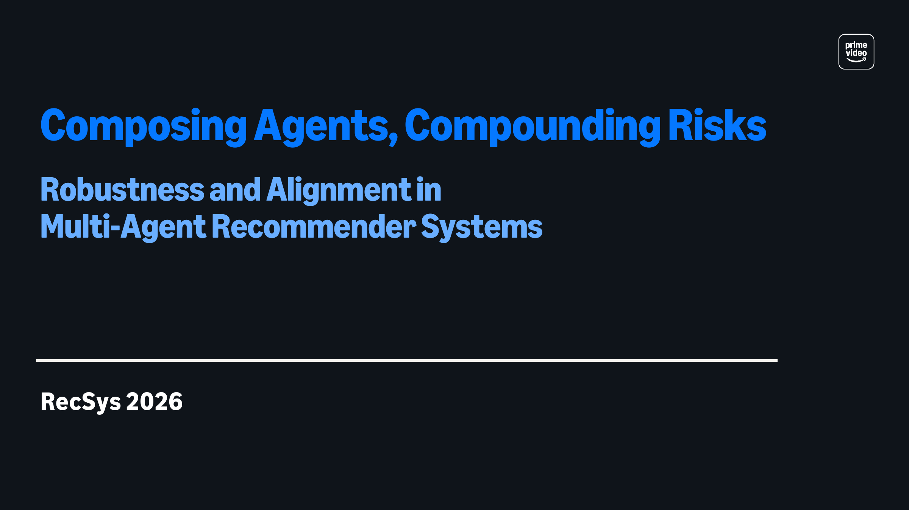

RecSys 2026 · Minneapolis · 28 September 2026
A Tutorial on Robustness and Alignment in Multi-Agent Recommender Systems
Multi-agent recommender systems are emerging as a new design paradigm in which LLM-powered agents plan over context, invoke tools, exchange intermediate outputs, and maintain memory across interactions. While these compositions create new opportunities for interactive and modular recommendation, they also introduce system-level risks that are easy to miss when agents are evaluated in isolation. As recommendation increasingly arises from composed multi-agent systems rather than single models, a shared vocabulary is still lacking for how risks propagate through agent interaction and how they should be evaluated. In line with RecSys 2026’s emphasis on recommender systems as systems, this tutorial addresses that gap through a risk taxonomy for multi-agent recommenders, an evaluation framework that scales from component to composition across offline and online tests, and mitigations across the system lifecycle.
@inproceedings{cutajar2026composing,
title = {Composing Agents, Compounding Risks: A Tutorial on Robustness
and Alignment in Multi-Agent Recommender Systems},
author = {Cutajar, Kurt and Hu, Anjun and Deldjoo, Yashar and Kandola, Jas},
booktitle = {Proceedings of the 20th ACM Conference on Recommender Systems (RecSys '26)},
year = {2026}
}
